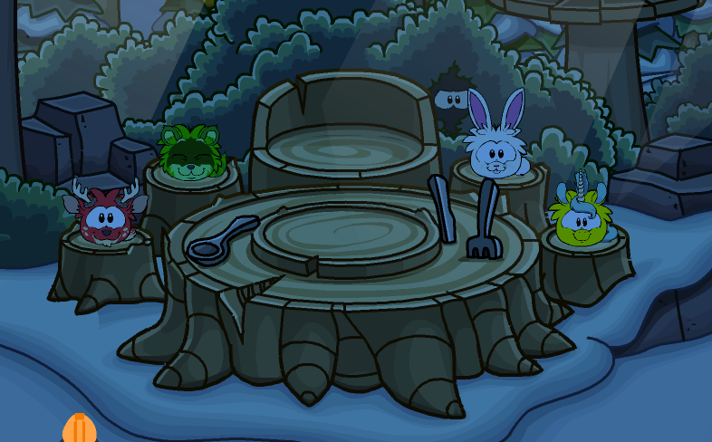

Een van mijn favoriete dingen van NewCP, zijn puffles. Ze helpen je om geld te krijgen en ze zijn schattig. Je hebt ook nog is super veel keuze
Wat zijn puffles?
Puffles zijn de schattige (niet allemaal) huisdieren die je kan kopen of krijgen.
Waar krijg je een puffle?
Je hebt 2 manieren om een puffle te krijgen, de eerste is als je er een koopt bij Puffle Wild of Puffle Shop. De tweede manier is door opdrachten te voltooien of een event mee te maken. Dit zijn meestal puffles die je niet altijd kan krijgen vanwege een event of
Puffle Shop
Bij de Puffle Shop heb je 12 verschillende puffles. Je kan er van 1 vaker eentje kopen. Elke puffle heeft een ander karakter. Zoals de puffle met de groene kleur heeft als personaliteitskenmerken playful en funny. Ook hebben de puffles bijpassende animaties bij de verschillende karakters.
De puffles bovenaan kosten 400 coins, de puffles die er anders uitzien (de blauwe hond en de tijger) kosten 800 coins.

Puffle Wild
Puffle Wild is het bos plek boven aan op de map. Hier zijn 13 puffles in totaal die je kunt kopen van 800 coins. Het zijn 4 verschillende soorten dieren puffles. 4 Konijnen, 4 wasberen, 4 herten en 1 unicorn puffles.
Mijn puffles
Je moet je puffles ook verzorgen anders als je te lang in je igloo er eentje laat zonder te verzorgen, dan rent je puffle weg. Om dit te voorkomen kan je je puffles naar de achtertuin sturen. Hier blijven ze en rennen ze niet weg, tenzij je ze weg wilt hebben. Dan kan je ze met een bord waar op staat "Return Puffle" wegsturen in de wije wereld.
Hieronder zijn mijn puffles, ze zijn aan het chillen in de achtertuin.